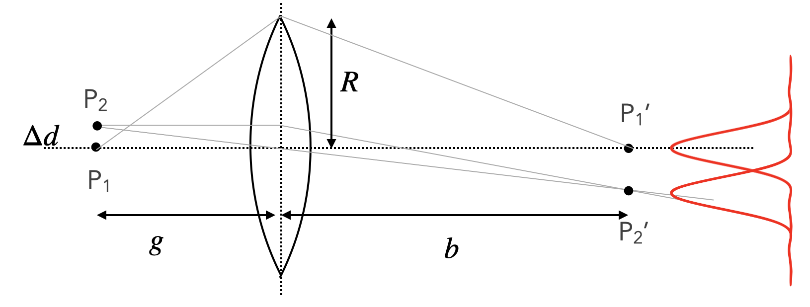
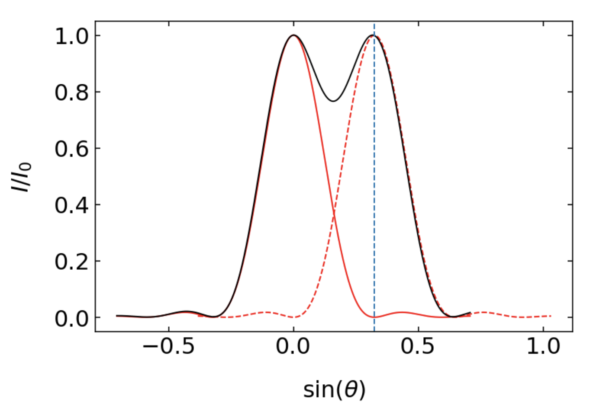

The Huygens principle, formulated by Christiaan Huygens in 1678, states that every point on a wavefront acts as a source of secondary spherical waves propagating in the forward direction. While this might seem counterintuitive from a classical electromagnetic perspective, where waves typically originate from accelerated charges, the principle has proven to be remarkably accurate and is fully consistent with modern quantum field theory.
Huygens principle for a plane wave incident with a wave vector \(\vec{k}\).
The principle can be demonstrated numerically, as shown in the figure below. By placing many spherical wave sources in close proximity along a line, we can reconstruct a plane wave, validating Huygens’ concept.
Huygens principle used to create a plane wave from a set of spherical waves. The graph on the left shows the amplitude of a single spherical wave of a wavelength \(\lambda=532\) nm. If we arrange 500 spherical wave sources along the x-direction very densely and they all are in phase since they represent the phase of the incident plane wave at \(z=0\), we can recreate the plane wavefronts for \(z>0\) (middle) and the constant intensity (right).
This phenomenon can be described mathematically using our earlier treatment of multiple-wave interference. Consider \(N\) spherical waves arranged along the x-axis at \(z=0\) with spacing \(d\) between neighboring sources. At a large distance (effectively infinity), the phase difference between adjacent waves is given by \(\Delta \phi=2\pi d\sin(\theta)/\lambda\), where \(\theta\) is the angle relative to the z-direction. The resulting intensity pattern follows our previous derivation:
This mathematical framework serves as the foundation for understanding diffraction phenomena, particularly in two important cases: 1. Single-slit diffraction, where Huygens wavelets are confined to a finite region 2. Diffraction gratings, where multiple slits are arranged periodically, creating a powerful tool for spectroscopic applications
While we use the term “diffraction” to describe these phenomena, they are fundamentally manifestations of wave interference, as described by Huygens’ principle.
Single Slit Diffraction
Let’s apply our interference formula to study the diffraction of an incident plane wave (wavevector \(\vec{k}\)) on a single slit of width \(b\). We can model this by placing a series of Huygens sources along the slit opening. While the sketch below shows just 3 sources for clarity, we’ll generalize this to \(N\) sources.
We divide the slit into segments of width \(\Delta b\) such that we have \(N=b/\Delta b\) Huygens sources, each with amplitude \(A_0=\sqrt{I_0}\). Applying our previous multi-wave interference formula with spacing \(d=\Delta b\), we obtain:
For convenience, let’s substitute \(x=\pi \frac{b}{\lambda}\sin(\theta)\), giving:
\[
I=I_0\frac{\sin^2(x)}{\sin^2(x/N)}
\]
In reality, we have a continuous distribution of sources across the slit width, corresponding to \(N\to\infty\). In this limit, for the denominator, \(x/N\) becomes very small, and we can use the small-angle approximation:
This formula describes the characteristic diffraction pattern of a single slit, with a central maximum and symmetric side lobes of decreasing intensity.
Single Slit Diffraction
The intensity distribution generated by the diffraction of monochromatic light on a single slit and observed in the far field is given by
where \(\lambda\) is the wavelength of the light and \(b\) the width of the slit. The angle of observation is given by \(\theta\). Note that the diffraction pattern on any aperture is resulting from the fact that you remove Huygens sources that would be normally needed to form a plane wavefront for example.
Total wave amplitude behind a slit (b=2µm) for an incident wave of 532 nm wavelength. The plot in the middle shows the intensity in the space behind the slit. The graph on the right displays the diffraction pattern at a screen at 100 µm distance from the slit.
Let’s have a look at some of the properties of the intensity distribution.
The single-slit diffraction pattern shows characteristic features that we can observe in both theoretical calculations and experimental measurements. The intensity distribution is described by an oscillating function with decreasing amplitude. The oscillations arise from the \(\sin^2\) term in the numerator, while the decay comes from the square term in the denominator.
Diffraction patterns as a function of the sine of the diffraction angle. The minima of the diffraction pattern in this plot are at integer multiples of \(\lambda/b\).
The graphs above illustrate two key relationships in single-slit diffraction:
The effect of wavelength: When comparing patterns for different wavelengths (with fixed slit width \(b=5\,\mathrm{\mu m}\)), longer wavelengths produce broader diffraction patterns
The effect of slit width: For the same wavelength, reducing the slit width to \(b=2.5\,\mathrm{\mu m}\) results in a broader diffraction pattern
These observations can be quantified by analyzing the positions of intensity minima. The intensity goes to zero when the argument of the sine function in the numerator equals multiples of π:
\[
\pi \frac{b}{\lambda}\sin(\theta) = m\pi
\]
where \(m\) is an integer. This simplifies to:
\[
\sin(\theta)=m\frac{\lambda}{b}
\]
This relationship reveals a fundamental principle in diffraction: the angular spread of the pattern is proportional to the ratio of wavelength to the size of the diffracting object (\(\lambda/b\)). While the exact mathematical form may vary for different geometries, this basic scaling remains valid.
Figure 1— Diffraction patterns on a single slit as observed in the lecture. The left image shows the diffraction pattern for red light, while the right image combines two different wavelengths (red, blue), where one clearly recognizes the wider diffraction peaks for the longer red wavelength.
The experimental observations above clearly demonstrate these principles, particularly showing how red light (longer wavelength) produces a broader diffraction pattern than blue light (shorter wavelength).
Circular Aperture
For a circular aperture, the diffraction pattern follows a more complex mathematical form involving Bessel functions. The intensity distribution is given by:
Here, \(R\) is the radius of the aperture. While similar to the sine function, the Bessel function has zeros at different positions: \(x_1=1.22\pi\), \(x_2=2.23\pi\), and so on.
Diffraction pattern of a circular aperture of radius \(5\) µm. Note that the intensity scale is saturated. The diffraction rings would otherwise not be visible. The minima of the diffraction pattern in this plot are at integer multiples of \(0.61\lambda/R\).
The first minimum of the diffraction pattern occurs when:
This follows the same general principle we’ve seen before: the angular spread is proportional to wavelength divided by aperture size. The central bright region up to this first minimum is known as the Airy disc, and in microscopy, this defines a resolution element or resel.
Application: Diffraction at the Human Eye
The iris of the human eye provides an excellent example of circular aperture diffraction. Let’s calculate its effects:
For an iris radius of \(R=2.5\) mm and green light (\(\lambda=532\) nm):
This 2.59 µm width matches remarkably well with the spacing of photoreceptor cells in the fovea, where cell density is approximately 150,000 per square millimeter (corresponding to 2.58 µm spacing). This is not coincidental: having more cells within an Airy disc wouldn’t improve resolution but would require each cell to be more sensitive as they share the available light intensity.
This natural optimization illustrates how biological systems have evolved to match physical limitations.
Resolution of an Optical Microscope
Rayleigh’s Resolution Criterion
The resolution of an optical system can be understood through diffraction patterns of circular apertures. The key question is: How close can two objects be while still being resolved as distinct entities? To answer this, we need to consider two aspects of how a lens affects wave propagation:
It changes wavefront curvature, focusing plane waves to a point
It acts as a circular aperture, creating diffraction effects due to its finite size

Each point source creates its own diffraction pattern. As sources move closer together, their patterns begin to overlap. Rayleigh proposed a specific criterion for resolvability:

According to the Rayleigh criterion, two objects are just resolvable when the maximum of one diffraction pattern coincides with the first minimum of the other. For incoherent sources, this creates a 26% intensity dip between the peaks.
The mathematical derivation follows these steps:
First minimum angle: \[
\sin(\theta_1)=0.61\frac{\lambda}{R}
\]
For small angles: \[
\sin(\theta_1)=\frac{d}{b}
\] where \(d\) is the separation of image points and \(b\) is the image distance.
Combining these with the imaging equation: \[
\frac{\Delta d}{d}=\frac{g}{b}
\]
We obtain: \[
\Delta d=0.61\lambda \frac{g}{R}\approx 0.61\lambda \frac{1}{\sin(\alpha)}
\]
This introduces the concept of numerical aperture: \[
NA=n\sin(\alpha)
\] where \(n\) is the refractive index of the medium.
The final form of the Rayleigh resolution criterion is: \[
\Delta d=0.61\frac{\lambda}{NA}
\]
Rayleigh Resolution Criterion
Two incoherent light sources can be resolved when their separation satisfies: \[
\Delta d\ge 0.61\frac{\lambda}{NA}
\]
The numerical aperture \(NA=n\sin(\alpha)\) depends on: - The refractive index \(n\) of the medium - The collection angle \(\alpha\) of the lens
In air, NA < 1, while immersion lenses (using water or oil) can achieve higher NA values, up to the medium’s refractive index.
Physically, this criterion reflects how much of the spherical wavefront from a point source is collected by the lens. A larger collection angle \(\alpha\) captures more of the wavefront, providing better spatial information about the source.
Abbe’s Resolution Definition
While Rayleigh’s criterion applies to incoherent sources (where intensities add), Abbe considered coherent sources. For coherent light, we must first calculate the total amplitude before determining intensity, leading to a different resolution criterion due to interference effects.
This distinction between coherent and incoherent imaging is crucial in microscopy and other optical systems.